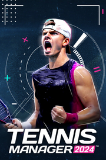

Tennis Manager 2024
Detalles
|  | |
| Tiempo de juego | No Jugado |
| Última actividad | Nunca |
| Añadido | 11/13/2024 0:35:38 |
| Modificado | 11/13/2024 1:05:56 |
| Estado de finalización | No Jugado |
| Librería | Playnite |
| Fuente | PORCHE |
| Plataforma | PC (Windows) |
| Fecha de lanzamiento | 5/23/2024 |
| Puntuación de la Comunidad | 73 |
| Puntuación de la Crítica | |
| Puntuación de usuario | |
| Género | Deportes Estrategia Indie Simuladores |
| Desarrollador | Rebound CG |
| Editor | Rebound CG |
| Característica | Logros De Préstamo Familiar Un Jugador Workshop |
| Enlaces | Punto de encuentro Discusiones Guías Noticias Página de la tienda PCGamingWiki Logros Workshop |
| Tag | 3D Acción Basados en texto Deportes e-sports Estrategia Exploración Fútbol Gestión Gestión de recursos Gestión del tiempo Indie Inteligencia artificial Realistas Rol estratégico Simulación Simulador de vida Simulador inmersivo Tenis Un jugador |
Descripción
Descripción del juego:
Toma las riendas de una academia de tenis y juega el mejor y más realista viaje tenístico. Navega a través de una amplia selección de torneos, con más de 2000 competiciones desde el circuito junior hasta la etapa profesional. Con 5000 jugadores a tu disposición, encuentra los talentos que catapultarán a tu academia a la fama.
En Tennis Manager, la gestión estratégica es esencial para el éxito. Asegúrate la estabilidad financiera, negocia contratos con prudencia y realiza inversiones estructurales para alcanzar tus objetivos a corto y largo plazo. Impresiona a tu exigente junta directiva con tu inteligente toma de decisiones y marca la pauta con tu estilo único de entrenamiento y gestión. Demuestre a su Federación que usted es la elección correcta para el puesto de capitán. Asume nuevas responsabilidades y lleva a la selección nacional a la gloria final. Gracias al motor 3D de última generación, sumérgete en el corazón de la acción y entrena a tu jugador en tiempo real durante los partidos.
Novedades de TM24:
Sistema de entrenamiento rediseñado y la nueva Forma

Gestiona la progresión de tus jugadores con un detalle sin precedentes teniendo en cuenta todas las facetas del tenis moderno. Este enfoque te permite profundizar en los entresijos del desarrollo del jugador, asegurándote de que cada elemento, desde el acondicionamiento físico y las habilidades técnicas hasta la resiliencia mental y la inteligencia táctica, se cultiva meticulosamente. Gestione sus sesiones de entrenamiento para potenciar las habilidades globales o mejorar la forma del jugador. Prioriza los programas de entrenamiento según los distintos periodos de la temporada y tus objetivos principales.
Atributos de los nuevos jugadores
Crea tu jugador ideal aprovechando los innovadores atributos disponibles en TM24, que te permitirán personalizar cada aspecto de su juego para que se ajuste perfectamente a tu planteamiento estratégico. Esta característica introduce una profunda personalización, permitiéndote esculpir un jugador que no sólo refleje tu estilo de juego, sino que también destaque en las áreas que más valoras.
Nuevo sistema de lesiones

Presentamos un avanzado sistema de gestión de lesiones que añade una capa hiperrealista a la ya de por sí compleja tarea de gestionar a un tenista. Al simular escenarios del mundo real, el sistema obliga a los entrenadores a tomar decisiones informadas sobre la intensidad del entrenamiento, la programación de los partidos y las intervenciones médicas. Añade profundidad a la gestión de los jugadores al incorporar factores como los tiempos de recuperación, el riesgo de agravar las lesiones existentes y el impacto a largo plazo de las lesiones en el rendimiento de un jugador.
Jugadores, Torneos, Academias, Federaciones, Mundo global del tenis
La última actualización presenta las bases de datos de jugadores y torneos, ahora mejoradas con las actualizaciones de 2024 para las categorías de torneos y la distribución de puntos en los circuitos masculino y femenino. A partir de la generación de 2009, encuentra a la próxima estrella emergente o crea tu propio jugador. Nuevas opciones de personalización disponibles en TM24.
Match-Sim optimizado

Las mejoras en la simulación de partidos aportan un nuevo nivel de realismo y profundidad estratégica a la jugabilidad, centrándose en un mejor comportamiento en ataque y una toma de decisiones más inteligente en la red, incluyendo smashes, voleas o semivoleas. También se han mejorado los globos y los saques. Estas mejoras no son solo cosméticas, sino que reflejan un conocimiento más profundo de las tácticas de tenis y las capacidades de los jugadores, lo que permite una representación más auténtica del conjunto de habilidades y las preferencias estratégicas de un jugador.
Análisis 3D optimizado
Las herramientas de análisis 3D ayudan a desglosar las jugadas de los partidos, permitiendo a jugadores y entrenadores analizar todos los aspectos de una actuación, desde la colocación del saque y la selección del golpe hasta los patrones de movimiento y la duración de los peloteos. Los nuevos filtros ofrecen una mejora integral de la comprensión del juego, lo que supone una mejor ayuda estratégica para los entrenadores.
Corte Fantástica

Un nuevo modo de juego para elevar tu creatividad a cotas sin precedentes con la posibilidad de diseñar tu propio recorrido por torneos personalizados. Sumérgete en la recreación de los torneos más emblemáticos de la historia, aspirando a la victoria con tu giro único, o incluso altera el curso de la historia para presenciar enfrentamientos entre jugadores de distintas épocas, o simplemente crea tu propio mundo de fantasía, ¡tú decides! Comparte tu creación con tus amigos y toda la comunidad de TM.
Pero eso no es todo, hay muchos más cambios que te esperan para que los descubras en los próximos días.
Únete a nuestro Discord o a nuestras páginas en las redes sociales para seguir la revelación de todas las características detalladas.
Toma las riendas de una academia de tenis y juega el mejor y más realista viaje tenístico. Navega a través de una amplia selección de torneos, con más de 2000 competiciones desde el circuito junior hasta la etapa profesional. Con 5000 jugadores a tu disposición, encuentra los talentos que catapultarán a tu academia a la fama.
En Tennis Manager, la gestión estratégica es esencial para el éxito. Asegúrate la estabilidad financiera, negocia contratos con prudencia y realiza inversiones estructurales para alcanzar tus objetivos a corto y largo plazo. Impresiona a tu exigente junta directiva con tu inteligente toma de decisiones y marca la pauta con tu estilo único de entrenamiento y gestión. Demuestre a su Federación que usted es la elección correcta para el puesto de capitán. Asume nuevas responsabilidades y lleva a la selección nacional a la gloria final. Gracias al motor 3D de última generación, sumérgete en el corazón de la acción y entrena a tu jugador en tiempo real durante los partidos.
Novedades de TM24:
Sistema de entrenamiento rediseñado y la nueva Forma
Gestiona la progresión de tus jugadores con un detalle sin precedentes teniendo en cuenta todas las facetas del tenis moderno. Este enfoque te permite profundizar en los entresijos del desarrollo del jugador, asegurándote de que cada elemento, desde el acondicionamiento físico y las habilidades técnicas hasta la resiliencia mental y la inteligencia táctica, se cultiva meticulosamente. Gestione sus sesiones de entrenamiento para potenciar las habilidades globales o mejorar la forma del jugador. Prioriza los programas de entrenamiento según los distintos periodos de la temporada y tus objetivos principales.
Atributos de los nuevos jugadores
Crea tu jugador ideal aprovechando los innovadores atributos disponibles en TM24, que te permitirán personalizar cada aspecto de su juego para que se ajuste perfectamente a tu planteamiento estratégico. Esta característica introduce una profunda personalización, permitiéndote esculpir un jugador que no sólo refleje tu estilo de juego, sino que también destaque en las áreas que más valoras.
Nuevo sistema de lesiones
Presentamos un avanzado sistema de gestión de lesiones que añade una capa hiperrealista a la ya de por sí compleja tarea de gestionar a un tenista. Al simular escenarios del mundo real, el sistema obliga a los entrenadores a tomar decisiones informadas sobre la intensidad del entrenamiento, la programación de los partidos y las intervenciones médicas. Añade profundidad a la gestión de los jugadores al incorporar factores como los tiempos de recuperación, el riesgo de agravar las lesiones existentes y el impacto a largo plazo de las lesiones en el rendimiento de un jugador.
Jugadores, Torneos, Academias, Federaciones, Mundo global del tenis
La última actualización presenta las bases de datos de jugadores y torneos, ahora mejoradas con las actualizaciones de 2024 para las categorías de torneos y la distribución de puntos en los circuitos masculino y femenino. A partir de la generación de 2009, encuentra a la próxima estrella emergente o crea tu propio jugador. Nuevas opciones de personalización disponibles en TM24.
Match-Sim optimizado
Las mejoras en la simulación de partidos aportan un nuevo nivel de realismo y profundidad estratégica a la jugabilidad, centrándose en un mejor comportamiento en ataque y una toma de decisiones más inteligente en la red, incluyendo smashes, voleas o semivoleas. También se han mejorado los globos y los saques. Estas mejoras no son solo cosméticas, sino que reflejan un conocimiento más profundo de las tácticas de tenis y las capacidades de los jugadores, lo que permite una representación más auténtica del conjunto de habilidades y las preferencias estratégicas de un jugador.
Análisis 3D optimizado
Las herramientas de análisis 3D ayudan a desglosar las jugadas de los partidos, permitiendo a jugadores y entrenadores analizar todos los aspectos de una actuación, desde la colocación del saque y la selección del golpe hasta los patrones de movimiento y la duración de los peloteos. Los nuevos filtros ofrecen una mejora integral de la comprensión del juego, lo que supone una mejor ayuda estratégica para los entrenadores.
Corte Fantástica
Un nuevo modo de juego para elevar tu creatividad a cotas sin precedentes con la posibilidad de diseñar tu propio recorrido por torneos personalizados. Sumérgete en la recreación de los torneos más emblemáticos de la historia, aspirando a la victoria con tu giro único, o incluso altera el curso de la historia para presenciar enfrentamientos entre jugadores de distintas épocas, o simplemente crea tu propio mundo de fantasía, ¡tú decides! Comparte tu creación con tus amigos y toda la comunidad de TM.
Pero eso no es todo, hay muchos más cambios que te esperan para que los descubras en los próximos días.
Únete a nuestro Discord o a nuestras páginas en las redes sociales para seguir la revelación de todas las características detalladas.